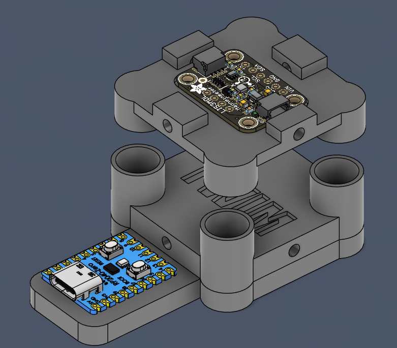
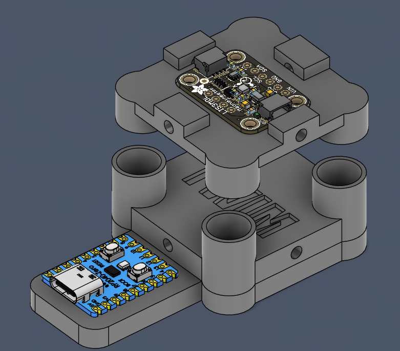
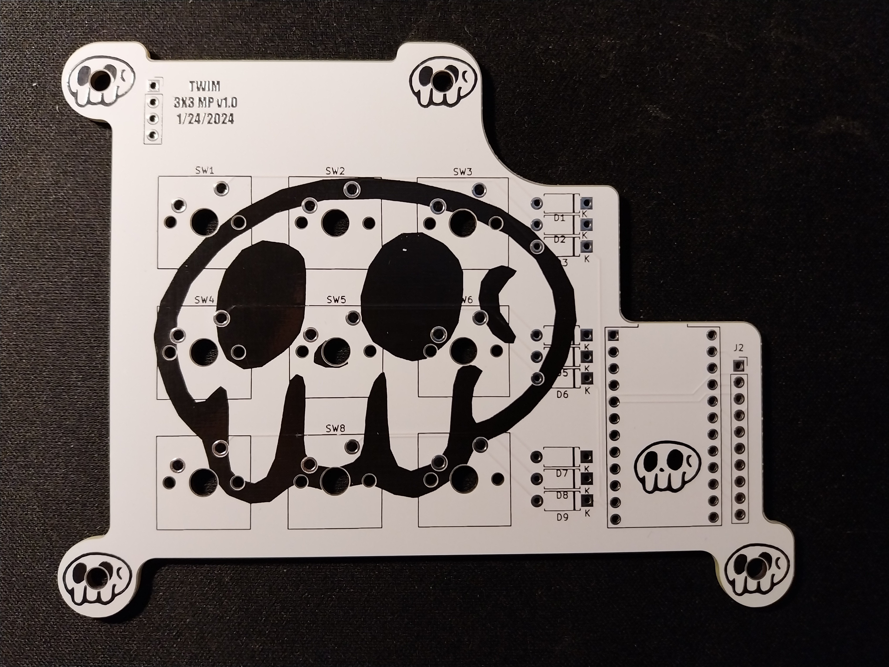
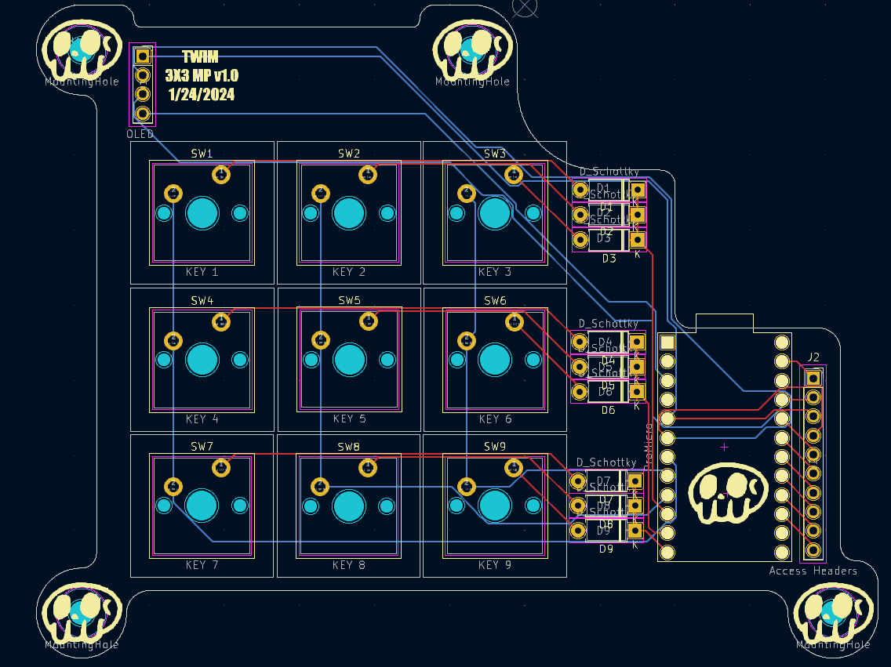
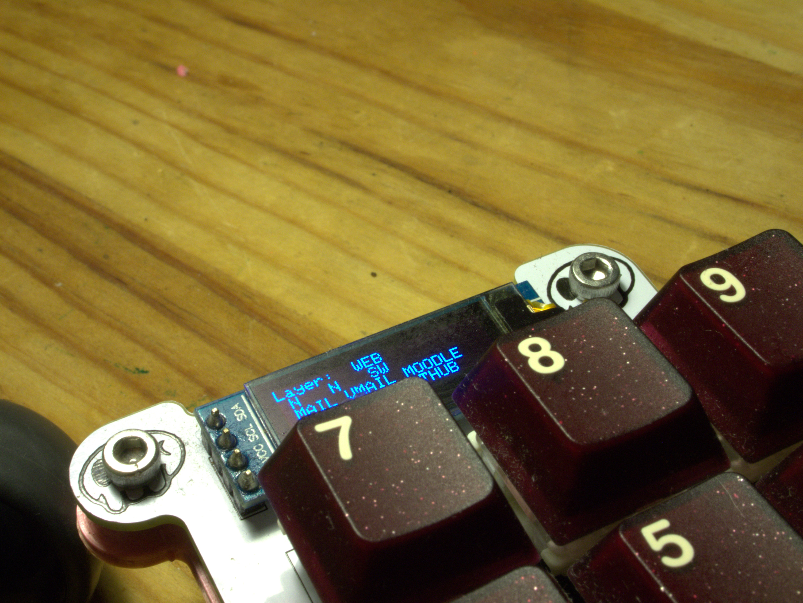
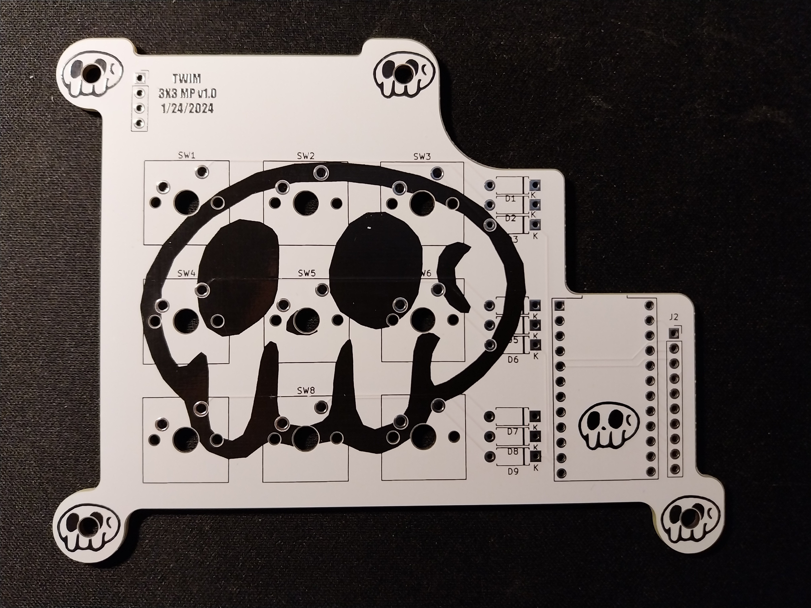
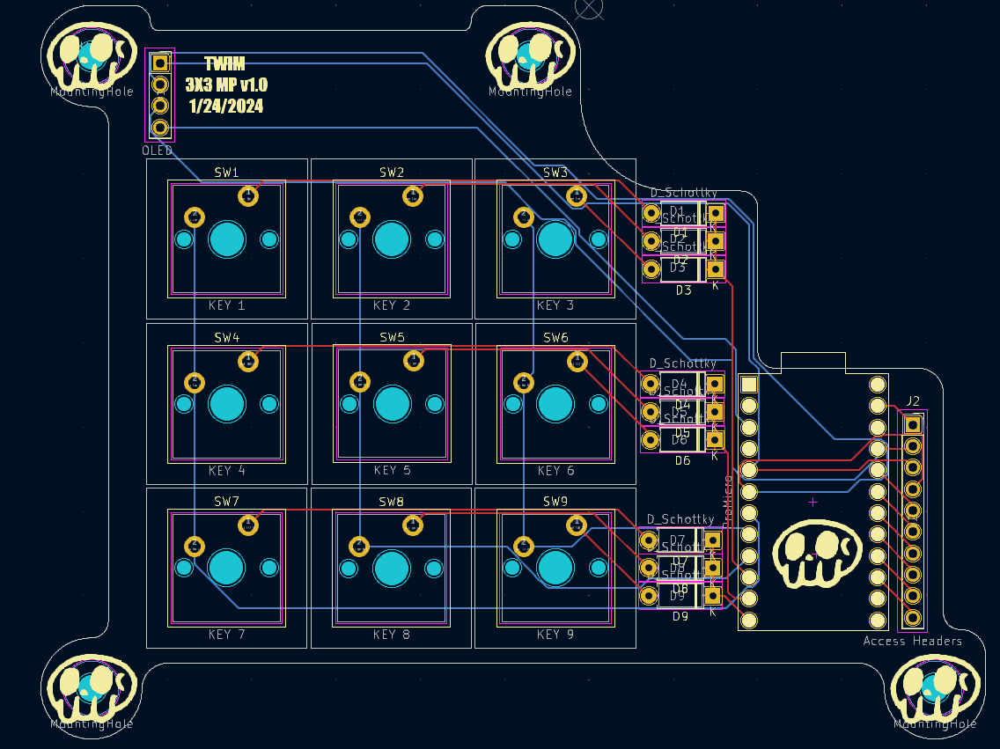
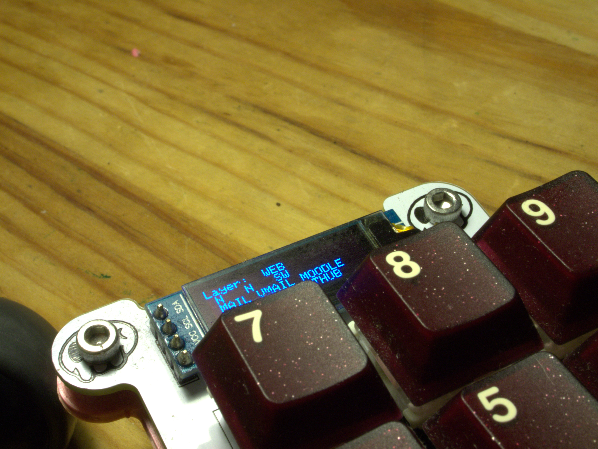

HID Devices
This page is dedicated to all of my HID Device projects !
3 DOF Space Mouse
Skills : CAD, Embedded systems
For most of my projects I design cases or parts for 3D printing.
I use AutoDesk Fusion360 to design these parts.
Space mice are not a new concept; they're a tool for controlling CAD programs with a bit more ergonomics.
Imagine grabbing the object you are designing and rotating it by pushing down on a knob and moving it as if it was the object itself.
This avoids having to press down 3 or 4 buttons at a time to pan, orbit, or zoom in and out of 3D space.
These mice can be particularly expensive for a name brand and multi-software compatible one.
I designed 2 versions:
Both versions are powered by a Pi Pico (Zero form factor).
The first one is based on a 4479 LIS3MDL 3-axis magnetometer from Adafruit. The original design had a magnet in the lower portion of the mouse and the magnetometer was
suspended in air with springs, allowing for it to move around the magnet.


The mouse is functional but this sensor is really sensitive and maxes out very easily.
I was using a neodymium magnet (which is pretty strong) but was still quite functional.
The real issues came from the metal strings and bolts holding everything together, they made the reading very hard to get regular.
When pushing down to pan through space as if you were holding on to the ground and moving side to side, the springs would compress and create a stronger magnetic field.
Similar issues arise from things like metal jewelry, things on the desk, etc. A whole lot of issues.
The second version which is much less interesting, is based on a joystick and a rotary encoder (it's kinda on the side burners for now). It can achieve the same thing or even more as it much more stable.
I was quite sad when my initial design wasn't reliable as when it came to signal analysis it was so much more interesting than just a normal joystick and digital knob.
I did learn how rotary encoders work, which is a very low-tech way of tracking directional rotation, This video will explain it better than me.


 

On the software side of things, I used the "keyboard.h" Arduino library to simulate keystrokes and mouse movements.
For the magnetometer version, we set soft limits on the 3 readings (One for each axis: roll, pitch, and up/down) and mapped them to keystrokes.
For example: if the the up/down values are higher than the set limit, we set the mouse mode to panning (like if you were grabbing the object) else we set the mode of the mouse to orbit.
Combining the readings from the roll and pitch we can (in theory) efficiently tilt the 3D object in the same way that the user moves to the top part of the mouse.
For the joystick and rotary encoder version, I simply map the values of the joystick to a linear function, more boring.
We use the built-in button to set modes, and the encode to control zoom.
Once again all the code is on my GitHub .
QMK MacroPad
Skills : PCB Design, CAD, Embedded systems, Product production
On a daily basis I only use a 60% keyboard which implies that I have to rely on complicated keystrokes to use media buttons, FN buttons, etc. Lacking easy access to these features I decided to dip my toes into the world of keyboard / macro pad design. I had already "built" custom keyboards but the building part was comparable to LEGO's and the software was already written and flashed into the PCBs. I did some research on button matrix and PCB design and went for it!
Multilayer macropad using QMK firmware and AutoHotKey script easily opens webpages, and applications and manages active media. Boosting a full custom PCB, 9 assignable buttons, and close to a limitless amount of layers to increase the number of available binds. For better feedback on the current binds and layer of the macro pad, a 128 x 32 pixel I2C OLED screen is situated at the top, indicating the current setup and changing at each level change. For the brains (microcontroller) I use the classic Arduino Pro Micro for its high GPIO count and small footprint. PCB was designed in KiCad and produced with JLBPCB.
 





TWIM IMPULSE - fully custom keyboard from PCB to software !
Skills : PCB Design, CAD, Embedded systems, Product production, HID devices
Once again the need for the creation of this custom keyboard was cause by an everyday constraint : As said before I use 60% keyboards but all of the PCBs that i had built my keyboards off of were built for QWERTY keyboards. As a result at home, I would work and play on a QWERTY physical layout while using an AZERTY software layout and at the university, I would use a classic AZERTY keyboard. This situation was not optimal for my workflow and the development of my typing speed. I had two choices: either put all the keyboards I had made in the closet and buy an AZERTY keyboard or build an AZERTY keyboard. I choose the latter. Plus these make a unique present for friends and family.
Pretty much the same thing as my Macropad but more effort was put into the design as well as the software, running a key matrix powered with an atmega32U4. Using QMK at first, then a more hands-on approach using some Arduino libraries like : "TinyUSB_Mouse_and_Keyboard" libraries allow the simulation of an HID interaction with the PC. Allowing also from simulating mouse movements the possibilities for built-in as endless: the memory is the limit (32Kb). I decided to drop using QMK as the whole software side was too hidden to my taste and now I have complete control. I could move servos with my keyboards if I wanted to! This custom PCB is carrying some custom art by me for an extra touch of funk. The PCB was designed in KiCad and produced with JLBPCB.